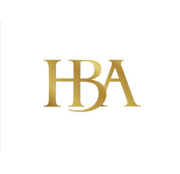

Trade Mark Journal No.2026/011 13 March 2026
UK00004343438 20 February 2026 (3,4,25)

- Class 3
- Cleaning sprays; Cleaning preparations; Washing soda, for cleaning; Carpet cleaning preparations; Cleaning fluids; Wiping cloth impregnated with a cleaning preparation for cleaning eye glasses; Cleaning preparations for cleansing drains; Cleaning foam; Preparation for cleaning dentures; Degreasers for cleaning purposes; Drain cleaning preparations; Dry cleaning preparations; Cleaning chalk; Chalk (Cleaning -); Laundry detergents for household cleaning use; Windscreen cleaning preparations; Oven cleaning preparations; Teeth cleaning (Preparations for -); Preparations for cleaning teeth; Cleaning preparations for the teeth; Preparations for cleaning the teeth; Cleaning dentures (Preparations for -); Preparations for cleaning dentures; Dentures (Preparations for cleaning -); Car cleaning preparations; Floor cleaning preparations; Ammonia for cleaning purposes; Cleaning and fragrancing preparations; Dry cleaning fluids; Cloths impregnated with polishing preparations for cleaning; Glass cleaning preparations; Automotive cleaning preparations; Tooth cleaning preparations; Wallpaper cleaning preparations; Foam cleaning preparations.
- Class 4
- Candles; Candles and wicks for candles for lighting; Tealight candles; Votive candles; Scented candles; Wicks for candles; Candles for use as nightlights; Nightlights [candles]; Candles for lighting; Fragranced candles; Wicks for candles for lighting; Candles and wicks for lighting; Tallow candles; Candles in tins; Candle torches; Perfumed candles; Candles (Perfumed -); Soy candles; Christmas lights [candles]; Candles for use in the decoration of cakes; Tea light candles; Table candles; Church candles; Fruit candles; Floating candles; Aromatherapy fragrance candles; Beeswax for use in the manufacture of candles; Candles for night lights; Wax for making candles; Candle wax; Musk scented candles; Tealights; Grave candles, non-electric; Christmas tree decorations for illumination [candles]; Bougies in the nature of wax candles; Christmas tree candles; Candles (Christmas tree -); Christmas tree ornaments for illumination [candles]; Candles for absorbing smoke; Candle assemblies; Wicks for lighting; Special occasion candles; Wicks for oil lamps; Lamp wicks; Wicks (Lamp -); Wax lights; Wax for lighting; Tea lights; Candles containing insect repellent; Tapers for lighting; Butane for lighting.
- Class 25
- Clothing; Knitwear [clothing]; Jackets [clothing]; Ready-to-wear clothing; Woolen clothing; Furs [clothing]; Layettes [clothing]; Clothing layettes; Garments for protecting clothing; Linen clothing; Headbands [clothing]; Headbands for clothing; Gloves [clothing]; Gloves as clothing; Clothes; Aprons [clothing]; Maternity clothing; Kerchiefs [clothing]; Jerseys [clothing]; Denims [clothing]; Shorts [clothing]; Cashmere clothing; Capes (clothing); Oilskins [clothing]; Gabardines [clothing]; Leather (Clothing of -); Silk clothing; Leather clothing; Clothing of leather; Collars [clothing]; Parts of clothing, footwear and headgear; Knitted clothing; Veils [clothing]; Hoods [clothing]; Windproof clothing; Corsets [clothing, foundation garments]; Embroidered clothing; Wristbands [clothing]; Bandeaux [clothing]; Belts [clothing]; Belts for clothing; Rainproof clothing; Waterproof clothing; Casual clothing; Visors [clothing]; Jackets being sports clothing; Jackets (Stuff -) [clothing]; Stuff jackets [clothing]; Bottoms [clothing]; Playsuits [clothing]; Ready-made clothing; Clothing for leisure wear; Trunks being clothing; Woven clothing; Latex clothing; Infant clothing; Leisure clothing; Clothing for sports; Sports clothing; Ties [clothing]; Drawers [clothing]; Drawers as clothing; Athletic clothing; Clothing for children; Muffs [clothing]; Bodies [clothing]; Clothing for babies; Tops [clothing]; Clothing for infants; Weatherproof clothing; Clothing for cycling; Pockets for clothing; Fabric belts [clothing]; Water-resistant clothing; Triathlon clothing; Handwarmers [clothing]; Clothing for skiing; Beach clothing; Thermal clothing; Chaps (clothing); Cowls [clothing]; Men's clothing; Fishing clothing; Dance clothing; Mitts [clothing]; Braces for clothing.
Home By Anna LTD